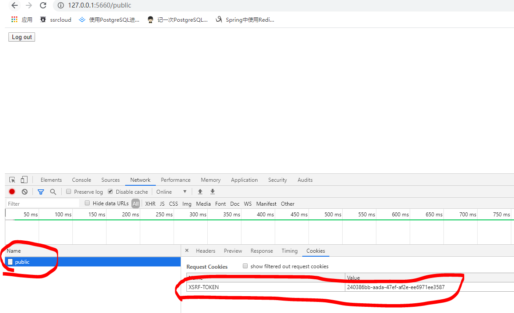
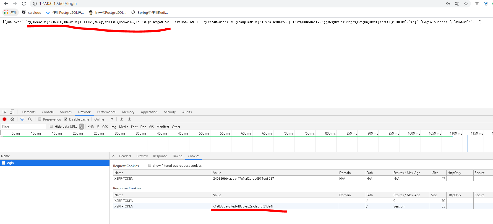
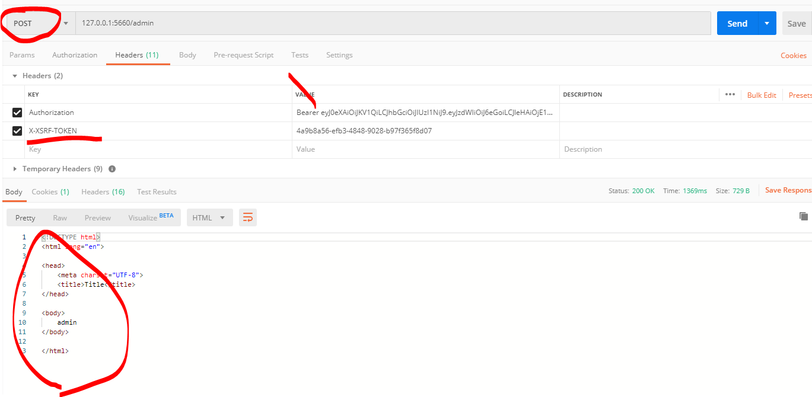
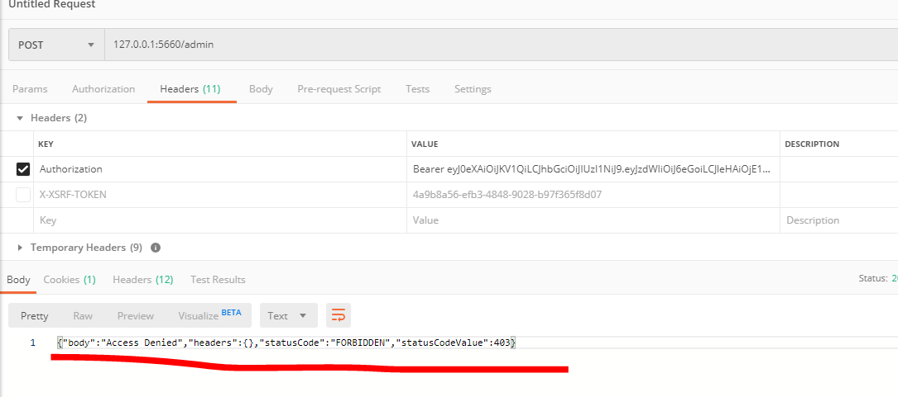
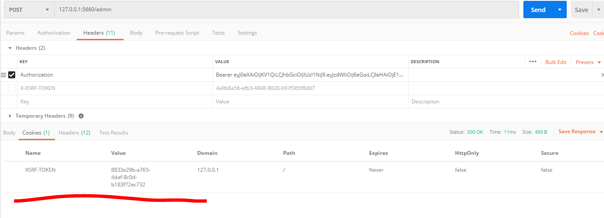

前言
在进行WEB开发的时候，时常听到资深的开发人员说要注意防范CSRF、XSS攻击，但是很多时候人们连什么是CSRF都不知道。本文将粗略地向大家介绍下CSRF的原理和防御手段。CSRF（Cross-site request forgery）跨站请求伪造
csrf
什么是csrf
csrf攻击原理
csrf攻击的原理就是利用浏览器的机制，某个网站是采用cookie+session机制来验证用户登陆时，用户请求只需要携带cookie中的JSESSIONID，网站就认为你已经登陆，完成各种操作；
但是，因为cookie是存在在你电脑本地的，当你发请求时会自动携带你请求域名的cookie，无论当前界面是否是当前域名！！
例如：你登陆了text.com本地存储了它的cookie，这时你访问了另外一个界面attack.com，这是一个攻击界面，它里面有个text.com/xxx的请求，你一点击就发送请求，因为浏览器的特性，浏览器会给请求自动携带上text.com的cookie，这就导致了跨站请求伪造。
这是对上面链接上的例子的仿造，详细还请看上面的链接！
如何抵御
每次请求要携带一个随机token，可以放cookie里，每次请求时手动把它作为参数或者请求头部，发送请求。
这时，可能会有疑问，发生csrf就是因为cookie的机制，为什么token还要放cookie里？
这里只是一种选择，此时，我们不光放在cookie里，还是设置http-only为false（可以通过js读取到），上述放在cookie被伪造是因为浏览器只会携带cookie，我们后端代码只验证参数/头部的token，不理会cookie里的这部分。csrf是无法直接构造参数或者伪造头部的，因为他们读取不到我们的token，虽然我们设置它为http-only：false了，但是也只有我们自己当前域名下的js能访问到，其他网址访问不到的。
抵御原理
参考网址：CSRF令牌为什么要通过HTTP头部而不是cookie来验证
- 用户发送get请求
- 服务器生成token，放入session/cookie中
- 浏览器接受后保存
- 浏览器发送请求前，先使用js获取cookie值，构造X-XSRF-TOKEN头部
- 发送请求
- 服务器获取此请求头的内容与服务器的token对比
- 成功/失败
SpringSecurity开启csrf防护
注意点
首先通过上述Spring Security官网介绍！总结了几点：
- 开启csrf后，如果选择将csrf存储在cookie中且读取需要使用js的话，必须设置
cookieHttpOnly=false - 如果将csrf保存在session里面，会有令牌随着session过期的风险，会返回403错误
- 使用csrf会将注销请求
/logout变为 POST请求，如果非得用GET请求，需要配置.logoutRequestMatcher(new AntPathRequestMatcher("/logout")); - 如果要配置CORS跨域，最好使用springsecurity自带的，并在最前面使用这样不会验证它的token，因为预检请求将不包含任何cookie
- ss默认针对PATCH,POST,PUT,DELETE请求进行防护
验证
如果把csrf放在cookie里面，我们可以在类CookieCsrfTokenRepository看到默认配置
1 | public final class CookieCsrfTokenRepository implements CsrfTokenRepository { |
意思是：
他会对请求的头部寻找X-XSRF-TOKEN的值或者参数为_csrf的值，找到对应value和服务器中的对比。
两者有一个就行。
代码开启
在之前的项目中添加代码：
1 | http.cors() |
效果
我们看一下开启的效果，我的代码是将csrf放在了cookie里面的，login、public链接不走csrf过滤，我们访问一下：
注意，我们这是用的cookie方式！！还有一种session方式，这里不做介绍。
我们随便请求一个链接就会在cookie中看到我们的csrf令牌

因为我们csrf不对GET防护，我们post请求一个受保护的链接试试，首先先把我们的用户验证信息获取到：

然后访问一个受保护的请求，我们需要构造之前项目自定义的登陆token还有csrf令牌：

假如我们不传入csrf，服务器会返回一个最新的csrf 令牌:


界面中如何使用
如果使用Thymeleaf 2.1+ ：
1 | <html xmlns:th="http://www.thymeleaf.org" lang=""> |
如果使用xhr:
1 | <html xmlns:th="http://www.thymeleaf.org" lang=""> |
1 | $(function () { |
前后端分离，建议使用axios的拦截器，为每个请求发起时，从cookie手动读取并放在请求头！！